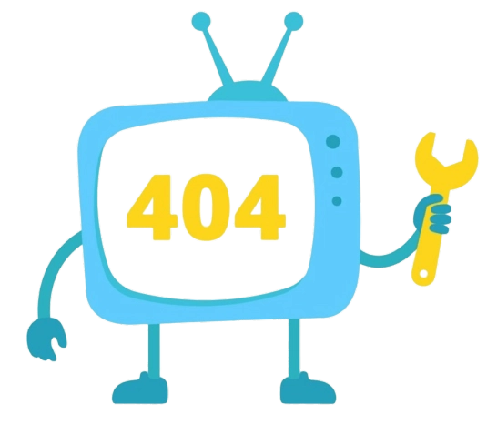

<ion-header>
  <ion-toolbar color="primary">
    <ion-title>Opps</ion-title>
  </ion-toolbar>
</ion-header>

<ion-content>
  <div class="error-container">
    <h1>404</h1>
    <div class="error-icon">
      
    </div>
    <p>No se ha encontrado la página !!!</p>
    <p>Error code: 404</p>
  </div>
</ion-content>